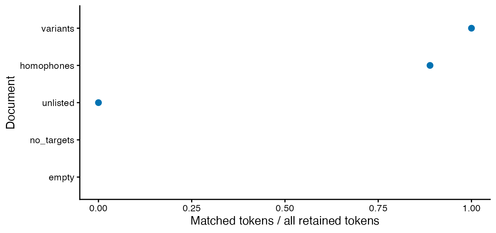

Japanese annotations: from original text to lexical measures
Source:vignettes/japanese-annotations.Rmd
japanese-annotations.RmdFor stimulus-item ratings and separately obtained AoA/BOI tables, see Japanese lexical norms. That workflow retains item IDs and norm-matching decisions independently of morphological segmentation.
Japanese text needs an explicit word-unit decision. For example,
counting 国際連合 as one item or 国際 / 連合
as two changes both vocabulary diversity and the available bigrams. The
default Unicode tokenizer in ldfreq does not perform Japanese
morphological analysis. Instead, use a Japanese analyzer and bring its
complete annotations into lexdiv_import_annotations().
The importer checks the supplied surfaces against original text, derives source positions, retains dictionary metadata and leaves missing annotations missing. Use existing R packages for morphology and concordances, and ldfreq to keep those input decisions visible in lexical analyses. This is an integration and audit contribution, not a new Japanese segmentation algorithm or a validated Japanese proficiency scale.
For a complete first workflow, start with Read files, review words and save the analysis. It uses small authored TXT/CSV files and prepared annotations, so you can learn the decisions without installing an analyzer. Then use the gibasa recipe to supply your own annotations. File reading and morphological analysis are separate steps.
An offline example
The package’s token-table importer supports R >= 4.1. The optional gibasa 1.1.3 recipe requires R >= 4.2, as well as the separately supplied dictionary. On R 4.1, import annotations prepared elsewhere or use the offline example below; gibasa is not required to install or use the core package.
These annotations are authored for illustration, not analyzer output or a Japanese gold standard. The original examples in this guide are covered by the package’s MIT license; no corpus or dictionary is redistributed.
segments <- data.frame(
document_id = c("essay", "empty"), segment_id = c("s1", "s1"),
text = c("国際連合で国際協力を学ぶ。", "")
)
annotations <- data.frame(
document_id = "essay", segment_id = "s1", token_index = 1:8,
surface = c("国際", "連合", "で", "国際", "協力", "を", "学ぶ", "。"),
lemma = c("国際", "連合", "で", "国際", "協力", "を", "学ぶ", NA_character_)
)
imported <- lexdiv_import_annotations(annotations, segments, list(
language = "ja", analyzer = "authored", analyzer_version = "1",
dictionary = "none", dictionary_version = "not-applicable",
unit = "authored-fine", normalization = "none"
))
imported$tokens
#> document_id segment_id token_index surface lemma start end
#> 1 essay s1 1 国際 国際 1 2
#> 2 essay s1 2 連合 連合 3 4
#> 3 essay s1 3 で で 5 5
#> 4 essay s1 4 国際 国際 6 7
#> 5 essay s1 5 協力 協力 8 9
#> 6 essay s1 6 を を 10 10
#> 7 essay s1 7 学ぶ 学ぶ 11 12
#> 8 essay s1 8 。 <NA> 13 13start and end are 1-based inclusive
Unicode codepoint positions within the segment’s original text.
They are not whole-document positions, byte offsets, UTF-16 offsets or
positions after normalization. The empty document remains in
imported$documents, with a zero-token segment. A sentence
or turn is a caller-supplied segment; the importer does not infer these
boundaries.
Import before filtering. Apart from whitespace,
every original character must be covered, including punctuation. A
skipped repeated word, dropped punctuation, or normalized replacement
causes an error. A supplied start or end
column must match the derived coordinates. This verifies the alignment,
not the correctness of POS, lexical units, or the source’s sentence
boundaries.
Whitespace annotations may be partial. For example, an analyzer can emit CR tokens while omitting LF from CRLF line endings. A whitespace-prefixed token uses the earliest exact match across whitespace-only gaps; non-whitespace characters cannot be skipped. Original line endings and positions are retained.
words <- imported$tokens[imported$tokens$surface != "。", ]
lexdiv_metrics(words$surface, metrics = "ttr")
#> <lexdiv_results: 1 metric; contract 0.2.0>
#> metric_id value status missing_reason N V below_quality_floor
#> 1 ttr 0.8571429 ok <NA> 7 6 FALSE
phrases <- lexdiv_ngrams(words, "authored-ja-surface-no-punctuation-v1",
term_col = "surface", documents = imported$documents$document_id)
phrases$documents
#> document_id n input_tokens opportunities ngram_types status
#> 1 essay 2 7 6 6 ok
#> 2 essay 3 7 5 5 ok
#> 3 empty 2 0 0 0 empty_document
#> 4 empty 3 0 0 0 empty_documentThe seven retained tokens contain six distinct surface strings: TTR is 6/7. There are six adjacent bigram and five trigram opportunities. These counts verify the example’s arithmetic; a seven-token text cannot establish the reliability of a diversity measure. Choose length-appropriate measures and report non-computable requests rather than changing their parameters silently.
Read files, review words and save the analysis
Suppose the first line is a title and your question concerns vocabulary in the body. Deleting the title changes later character positions; counting every target hit includes words outside your intended sample. This example retains the whole file, selects the body by its original positions, and reports body word counts separately from the lexical identities you review.
The five authored files contain spelling variants, homophones, an
invented unlisted form, punctuation only, and an empty file. Their
annotations are prepared by the example’s author, not
produced by a hidden tokenizer. All files are MIT teaching material; no
learner corpus or dictionary is bundled. The CSV also contains authored
POS1 and goshu labels for the descriptive
profile below; <MISSING> marks unassigned features.
These are not UniDic results. Optional quanteda >= 4.5.0 and a UTF-8
R session are needed for KWIC review. No Python or external model is
required for this walkthrough.
To run the complete example at once:
source(system.file("examples", "japanese-file-workflow.R", package = "ldfreq"))
as.data.frame(ja_file_record$metrics) # All retained body words
ja_file_record$counts # Reviewed target occurrences only
ja_file_output # Directory containing the complete RDS and count CSVThe following steps show the same recipe. The files and annotations are separate inputs; replacing a TXT file also requires complete annotations of its new text.
1. Read the original files and import prepared annotations
sys.source(system.file("examples", "text-file-input.R", package = "ldfreq", mustWork = TRUE),
envir = environment())
ja_file_dir <- system.file("examples", "text-input", "japanese-workflow",
package = "ldfreq", mustWork = TRUE)
ja_document_ids <- c("variants", "homophones", "unlisted", "no_targets", "empty")
ja_files <- lapply(ja_document_ids, function(id)
read_text_file(file.path(ja_file_dir, paste0(id, ".txt")), encoding = "UTF-8"))
ja_file_manifest <- cbind(document_id = ja_document_ids,
do.call(rbind, lapply(ja_files, `[[`, "source")))
ja_file_segments <- data.frame(document_id = ja_document_ids, segment_id = "s1",
text = vapply(ja_files, `[[`, character(1), "text"))
ja_file_annotations <- utils::read.csv(
text = read_text_file(file.path(ja_file_dir, "annotations.csv"))$text,
colClasses = "character", check.names = FALSE, na.strings = "<MISSING>")
ja_file_annotations$token_index <- as.numeric(ja_file_annotations$token_index)
ja_file_import <- ldfreq::lexdiv_import_annotations(ja_file_annotations, ja_file_segments,
list(language = "ja", analyzer = "authored", analyzer_version = "2",
dictionary = "none", dictionary_version = "not-applicable",
unit = "authored-file-workflow", normalization = "none"))Each original file is one segment here. Whitespace gaps, including
its line breaks, are preserved. These are not inferred sentence
boundaries. The importer checks every non-whitespace character against
annotations.csv before any title or punctuation is
excluded. ja_file_manifest records encoding, byte hashes
and a removed leading BOM, if any. The file input guide
explains explicit UTF-8/CP932 decoding in more detail.
| Object | One row represents | Keep it for |
|---|---|---|
ja_file_segments |
One original file/segment, including empty files | Original text and document IDs |
ja_file_import$tokens |
One prepared token with original character positions | Complete annotation before selection |
ja_file_selection |
One original token and its inclusion reason | Body and punctuation exclusions |
ja_file_after$occurrences |
One target occurrence, not one candidate | Context, status and recorded decisions |
ja_file_record |
The complete saved analysis | Reopening without the analyzer or source files |
2. Select the body without rewriting the text
# One segment and one contiguous body range per document in this small recipe.
# Empty original files have NA/NA bounds. Titles remain in the complete import.
ja_body_ranges <- data.frame(document_id = ja_document_ids,
start = c(5L, 4L, 1L, 1L, NA_integer_),
end = c(nchar(ja_file_segments$text[1:4], type = "chars"), NA_integer_),
reason = c("Exclude authored title line", "Exclude authored title line",
"Entire file", "Entire file", "Empty original file"))The first body starts at character 5, after the title
リンゴ and its newline. The second starts at character 4,
after はし and its newline. Those are explicit decisions
about these files, not a rule that every first line is a
title. Empty files retain unavailable bounds. The helper is
limited to one segment and one contiguous body range per document; it
rejects a range that cuts through a token. A boundary change requires a
new complete annotation, as shown below.
This recipe excludes only the literal full stop 。 after
selecting the body. It retains particles and verbs. Other datasets need
their own declared policy for punctuation, numbers and proper nouns.
Neither the complete import nor its original token indices are
edited.
Show the body-range validation and selection code
select_japanese_example_body <- function(imported, ranges) {
s <- imported$segments; t <- imported$tokens
if (anyDuplicated(s$document_id) || anyDuplicated(ranges$document_id) ||
!setequal(s$document_id, ranges$document_id))
stop("Supply one segment and one body-range row per document.")
r <- ranges[match(s$document_id, ranges$document_id), ]
width <- nchar(s$text, type = "chars")
empty <- width == 0L
if (!is.numeric(r$start) || !is.numeric(r$end) ||
any(!is.na(r$start[empty]) | !is.na(r$end[empty])) ||
anyNA(r$start[!empty]) || anyNA(r$end[!empty]) ||
any(!is.finite(r$start[!empty]) | !is.finite(r$end[!empty])) ||
any(r$start[!empty] != floor(r$start[!empty]) | r$end[!empty] != floor(r$end[!empty])) ||
any(r$start[!empty] < 1 | r$end[!empty] > width[!empty] | r$start[!empty] > r$end[!empty]))
stop("Use inclusive codepoint bounds within nonempty text, and NA/NA for empty files.")
row <- match(t$document_id, s$document_id)
inside <- t$start >= r$start[row] & t$end <= r$end[row]
overlap <- t$end >= r$start[row] & t$start <= r$end[row]
if (any(overlap & !inside))
stop("A body range cuts through a token; review the range or complete annotation first.")
# Explicit example policy: retain particles/verbs; exclude only the full stop.
punctuation <- t$surface == "。"
data.frame(t[c("document_id", "segment_id", "token_index", "start", "end", "surface")],
in_body = inside, retained = inside & !punctuation,
reason = ifelse(!inside, "outside_body", ifelse(punctuation, "full_stop", "retained")))
}
ja_file_selection <- select_japanese_example_body(ja_file_import, ja_body_ranges)3. Inspect KWIC and record contextual decisions
ja_file_candidates <- data.frame(
term = c("りんご", "リンゴ", "林檎", rep("はし", 3)),
candidate_id = c(rep("apple", 3), "bridge", "chopsticks", "edge"),
label = c(rep("林檎", 3), "橋", "箸", "端"))
ja_file_targets <- c("りんご", "リンゴ", "林檎", "はし", "ぷにょ語")
ja_file_resource <- list(resource_id = "authored-ja-file-candidates", resource_version = "1",
source_reference = "ldfreq authored Japanese file workflow", data_license = "MIT")
ja_file_before <- ldfreq::lexdiv_ambiguity_review(ja_file_import, ja_file_targets,
ja_file_candidates, ja_file_resource)
ja_file_context <- ja_file_before$occurrences
# Match by document + original token index, never by a sorted display's row number.
ja_file_key <- paste(ja_file_selection$document_id, ja_file_selection$token_index, sep = ":")
ja_file_context$in_body <- ja_file_selection$in_body[match(
paste(ja_file_context$document_id, ja_file_context$token_index, sep = ":"), ja_file_key)]
ja_file_context[c("document_id", "surface", "pre", "post", "in_body", "status")]
#> document_id surface pre post
#> 1 variants リンゴ りんご と リンゴ と 林檎
#> 2 variants りんご リンゴ と リンゴ と 林檎 。
#> 3 variants リンゴ リンゴ りんご と と 林檎 。
#> 4 variants 林檎 リンゴ りんご と リンゴ と 。
#> 5 homophones はし はし を 渡る 。 はし
#> 6 homophones はし はし を 渡る 。 はし で
#> 7 homophones はし はし はし を 渡る 。 で 食べる 。 はし を
#> 8 homophones はし 。 はし で 食べる 。 を 見る 。
#> 9 unlisted ぷにょ語 。
#> in_body status
#> 1 FALSE unreviewed
#> 2 TRUE unreviewed
#> 3 TRUE unreviewed
#> 4 TRUE unreviewed
#> 5 FALSE unreviewed
#> 6 TRUE unreviewed
#> 7 TRUE unreviewed
#> 8 TRUE unreviewed
#> 9 TRUE no_candidates
# Authored demonstration decisions only. Title hits and the invented word
# remain unsubmitted. In a study, inspect context and use your own decisions.
ja_file_decisions <- ja_file_context[
ja_file_context$in_body & ja_file_context$surface != "ぷにょ語",
c("review_id", "occurrence_id")]
ja_file_decisions$status <- c(rep("selected", 5), "unresolved")
ja_file_decisions$candidate_id <- c(rep("apple", 3), "bridge", "chopsticks", NA_character_)
ja_file_decisions$reviewer <- "authored-example"
ja_file_decisions$reason <- c(rep("Author intends fruit", 3),
"Author intends crossing a bridge", "Author intends eating with chopsticks",
"Seeing context leaves the intended item unresolved")
ja_file_after <- ldfreq::lexdiv_ambiguity_review(ja_file_import, ja_file_targets,
ja_file_candidates, ja_file_resource, decisions = ja_file_decisions)Title hits remain visible with in_body = FALSE; they are
unsubmitted and do not enter the body counts. The body contains three
spellings intended as the fruit, two contextually identified uses of
はし, a third unresolved はし, and an invented
word with no candidate. Even a single candidate needs an explicit
decision. The assignments in the code express the author’s intended
meanings; they are not automatic correction or evidence of annotation
accuracy.
For your own research, use the CSV decision worksheet to inspect, edit and reapply decisions by their fixed IDs. Keep title/body membership beside the worksheet; do not delete the original annotations to hide title hits. Changing the source, segmentation or candidate inventory requires a new review. The body range is a separate selection: save it with the review and rerun the selection/count steps when it changes. The review ID does not certify a body range that was never part of its input.
4. Report whole-body measures and target counts separately
| Document | Body tokens | Surface types | TTR | Status |
|---|---|---|---|---|
| variants | 5 | 4 | 0.800 | ok |
| homophones | 9 | 6 | 0.667 | ok |
| unlisted | 1 | 1 | 1.000 | ok |
| no_targets | 0 | 0 | NA | missing |
| empty | 0 | 0 | NA | missing |
The first two bodies contain 5 and 9 tokens, with 4 and 6 surface types. These TTR values illustrate accounting on tiny texts, not a recommended proficiency measure. Punctuation-only and empty documents both have no retained words; their source counts distinguish them, while TTR remains missing for both.
| Document | Targets | Selected | Unresolved | No candidate | Coverage |
|---|---|---|---|---|---|
| variants | 3 | 3 | 0 | 0 | 1.00 |
| homophones | 3 | 2 | 1 | 0 | 0.67 |
| unlisted | 1 | 0 | 0 | 1 | 0.00 |
| no_targets | 0 | 0 | 0 | 0 | NA |
| empty | 0 | 0 | 0 | 0 | NA |
| Document | Selected surface types | Selected lexical types | All-target lexical types |
|---|---|---|---|
| variants | 3 | 1 | 1 |
| homophones | 1 | 2 | NA |
| unlisted | 0 | 0 | NA |
| no_targets | 0 | 0 | 0 |
| empty | 0 | 0 | 0 |
The variant spellings have 3 surface types and 1 selected lexical
identity on the same 3 targets. The two selected homophone occurrences
have 1 surface type and 2 identities. The third homophone is unresolved,
so the complete target lexical-type count stays NA, with
coverage 2/3. The invented form also stays unavailable, rather than
receiving its own identity as a fallback. For a document with no
targets, zero target types is an empty-set count, not a claim that its
writer knows zero words; selection coverage is unavailable.
ja_file_metrics uses every retained body word.
ja_file_counts describes only the declared targets. Do not
replace the former’s V with the latter’s selected identity count. An
all-word lexical-identity measure would require an explicit identity
policy and adequate coverage for the whole word population.
Show how the body measures and target tables are calculated
ja_file_words <- ja_file_import$tokens[ja_file_selection$retained, ]
ja_file_sequences <- stats::setNames(lapply(ja_document_ids, function(id)
ja_file_words$surface[ja_file_words$document_id == id]), ja_document_ids)
ja_file_metrics <- ldfreq::lexdiv_metrics_batch(ja_file_sequences, metrics = "ttr")
# Keep all documents. Target identity counts do not describe all body words.
ja_file_occurrences <- ja_file_after$occurrences
ja_file_occurrences$in_body <- ja_file_context$in_body[
match(ja_file_occurrences$occurrence_id, ja_file_context$occurrence_id)]
ja_file_counts <- do.call(rbind, lapply(ja_document_ids, function(id) {
o <- ja_file_occurrences[ja_file_occurrences$document_id == id & ja_file_occurrences$in_body, ]
selected <- o$status == "selected"
v <- length(unique(o$candidate_id[selected]))
data.frame(document_id = id,
source_N = sum(ja_file_import$tokens$document_id == id),
outside_body_N = sum(ja_file_selection$document_id == id & !ja_file_selection$in_body),
target_N = nrow(o), selected_N = sum(selected),
unreviewed_N = sum(o$status == "unreviewed"), unresolved_N = sum(o$status == "unresolved"),
no_candidates_N = sum(o$status == "no_candidates"),
selection_coverage = if (nrow(o)) sum(selected) / nrow(o) else NA_real_,
target_surface_V = length(unique(o$surface)),
target_lexical_V = if (all(selected)) v else NA_integer_,
common_surface_V = length(unique(o$surface[selected])), common_lexical_V = v)
}))
ja_file_record <- list(files = ja_file_manifest, imported = ja_file_import,
body_ranges = ja_body_ranges, selection = ja_file_selection,
before = ja_file_before, after = ja_file_after, decisions = ja_file_decisions,
metrics = ja_file_metrics, counts = ja_file_counts,
policy = "One original file per segment; declared body ranges; exclude literal full stops; exact authored single-token candidates",
session = utils::sessionInfo())5. Save enough to resume
ja_file_output <- tempfile("japanese-file-review-")
dir.create(ja_file_output)
saveRDS(ja_file_record, file.path(ja_file_output, "analysis.rds"), version = 2)
utils::write.csv(ja_file_counts, file.path(ja_file_output, "target-counts.csv"),
row.names = FALSE, fileEncoding = "UTF-8", na = "NA")
ja_file_restored <- readRDS(file.path(ja_file_output, "analysis.rds"))
stopifnot(identical(ja_file_restored, ja_file_record))The recipe uses a temporary directory to avoid overwriting study
files. In your project, save the same complete
ja_file_record to a chosen persistent path:
saveRDS(ja_file_record, "japanese-file-analysis.rds", version = 2)
saved <- readRDS("japanese-file-analysis.rds")
saved$counts
saved$body_ranges
saved$selection[saved$selection$reason != "retained", ]The RDS retains the original text, input hashes, annotations, body ranges, inclusion reasons, candidates, before/after decisions, measures and session. The CSV is an inspection table and cannot replace that complete record. You can read the RDS without Python or a dictionary; reapplying KWIC decisions requires quanteda. For other analyzers, import their complete original surfaces and actual metadata into the same workflow; never replace source text with a normalized form to make the import succeed.
Describe script, word origin and POS by document
Use a document profile to describe what was counted
before interpreting a diversity score. The installed
japanese-document-profile.R recipe takes a complete import,
its complete selection table, an explicit POS grouping and a condition
label. It returns ordinary data frames and keeps its inputs. It is an
explicitly sourced example, not an exported function or a new
analyzer.
Continue from the file workflow above:
sys.source(system.file("examples", "japanese-document-profile.R", package = "ldfreq", mustWork = TRUE),
envir = environment())
# A declared, deliberately partial example map; other POS remain unmapped.
ja_pos_groups <- c("名詞" = "content", "動詞" = "content", "形容詞" = "content",
"形状詞" = "content", "副詞" = "content", "助詞" = "function", "助動詞" = "function")
ja_profile <- japanese_document_profile(ja_file_import, ja_file_selection,
pos_groups = ja_pos_groups, condition = "authored-body-excluding-full-stops")
stopifnot(isTRUE(all.equal(ja_profile$documents$retained_N, as.data.frame(ja_file_metrics)$N)))The example map groups some POS labels as content or
function. Pronouns, affixes, conjunctions and other
unlisted labels remain unmapped; this is a deliberately
partial classification, not a universal content-word definition. For
your study, supply the labels and grouping that match your dictionary
and research question. The recipe does not change which tokens you
selected.
| Document | Source tokens | Outside body | Excluded in body | Retained tokens | Retained codepoints |
|---|---|---|---|---|---|
| variants | 7 | 1 | 1 | 5 | 10 |
| homophones | 13 | 1 | 3 | 9 | 16 |
| unlisted | 2 | 0 | 1 | 1 | 4 |
| no_targets | 1 | 0 | 1 | 0 | 0 |
| empty | 0 | 0 | 0 | 0 | 0 |
For each document, source tokens equal outside-body tokens plus
exclusions inside the body plus retained tokens. The original file,
including its title, line endings and spaces, remains available.
Character counts have two distinct populations:
original_text covers every original segment, whereas
retained_tokens covers only the surfaces of retained
tokens, excluding gaps. The latter is not the length of the original
body including whitespace.
| Character category | Codepoints | All retained codepoints | Proportion | |
|---|---|---|---|---|
| 18 | han | 2 | 10 | 0.2 |
| 19 | hiragana | 5 | 10 | 0.5 |
| 20 | katakana | 3 | 10 | 0.3 |
The three fruit spellings appear in 5 retained tokens totaling 10 codepoints: 2 Han-script, 5 hiragana and 3 katakana. Their supplied origin labels tell a different story:
| Document | Origin label | Status | Tokens | All retained tokens | Proportion | |
|---|---|---|---|---|---|---|
| 6 | variants | 和 | observed | 2 | 5 | 0.4 |
| 7 | variants | 漢 | observed | 3 | 5 | 0.6 |
| 19 | homophones | 和 | observed | 9 | 9 | 1.0 |
| 35 | unlisted | NA | missing | 1 | 1 | 1.0 |
| 48 | no_targets | NA | missing | 0 | 0 | NA |
| 61 | empty | NA | missing | 0 | 0 | NA |
All three fruit spellings have the authored 漢 label;
the two particles have 和. Writing a word in katakana does
not make this recipe assign it a loanword label. Actual UniDic output
supplies goshu independently of surface spelling. Its
labels, including proper-name and symbol categories, are preserved as
supplied. No origin is inferred for a missing label, and character
proportions are not scores of kanji knowledge.
The character unit is the original Unicode
codepoint, with no normalization. Thus precomposed
が has one codepoint; か followed by a
combining dakuten has two. These are not grapheme-cluster or
visual-character counts. The recipe uses Unicode Script
properties through stringi and saves its ICU/Unicode versions. Its
disjoint categories first separate six shared kana signs
(ー, ｰ, ゛, ゜,
ﾞ, ﾟ), then combining marks, decimal digits,
whitespace, punctuation, symbols, Han, hiragana, katakana, Latin and
other codepoints. Han-script includes signs such as 々; it
is not an educational kanji inventory. Half-width forms remain
half-width, and emoji sequences can contain several codepoints in
different categories.
Inspect the three tables and the source-linked rows directly:
ja_profile$documents[c("document_id", "pos_missing_N", "origin_missing_N", "pos_unmapped_N")]
#> document_id pos_missing_N origin_missing_N pos_unmapped_N
#> 1 variants 0 0 0
#> 2 homophones 0 0 0
#> 3 unlisted 1 1 0
#> 4 no_targets 0 0 0
#> 5 empty 0 0 0
subset(ja_profile$tokens, retained &
(pos_status == "missing" | pos_group_status == "unmapped"),
select = c(document_id, segment_id, start, end, surface, pos_value, pos_group_status))
#> document_id segment_id start end surface pos_value pos_group_status
#> 21 unlisted s1 1 4 ぷにょ語 <NA> missing| Output | Unit and denominator |
|---|---|
$documents |
One document under the declared condition, including empty documents; token and codepoint totals are separate. |
$characters |
One document/population/category; denominator includes
every codepoint in that population, including whitespace and other
characters where present. |
$features |
One document/feature/category/status; all retained tokens are the
denominator, including missing and unmapped entries. Features are
pos, origin and pos_group. |
$tokens |
Every original token with source anchors, selection reasons, raw
labels, classification statuses and category-specific char_
counts. |
missing means NA, blank-only text or
literal *; the raw value survives in $tokens
and $imported. unmapped means a POS label
exists but has no entry in your grouping table.
field_present = FALSE distinguishes an absent input column
from a present column with missing entries. Feature columns must be
character vectors. Supply pos_col and
origin_col if your columns have different names. A zero
count with a positive denominator is zero; an empty denominator produces
NA proportions.
Lexical-review decisions remain in ja_file_record$after:
a decision about a target’s lexical identity does not validate every
POS/origin label or change these descriptions automatically. The profile
keeps the full selection and input; the file-workflow record
additionally keeps body ranges, decisions and the existing N/V/TTR
results. Save them together:
ja_profile_record <- list(profile = ja_profile, file_review = ja_file_record)
saveRDS(ja_profile_record, file.path(ja_file_output, "document-profile.rds"), version = 2)
for (name in c("documents", "characters", "features"))
utils::write.csv(ja_profile[[name]], file.path(ja_file_output, paste0("profile-", name, ".csv")),
row.names = FALSE, fileEncoding = "UTF-8", na = "NA")
stopifnot(identical(readRDS(file.path(ja_file_output, "document-profile.rds")), ja_profile_record))For a persistent study directory, change the output path explicitly. The CSVs are analysis/inspection tables; the full RDS retains the original sources and conditions. Recompute from the saved inputs and policy without rerunning a model:
saved_profile <- readRDS(file.path(ja_file_output, "document-profile.rds"))$profile
replayed_profile <- japanese_document_profile(saved_profile$imported, saved_profile$selection,
saved_profile$policy$pos_groups, saved_profile$policy$condition,
pos_col = saved_profile$policy$pos_col, origin_col = saved_profile$policy$origin_col)
stopifnot(identical(replayed_profile, saved_profile))Exact replay here uses the same software versions; retain the saved counts and ICU/Unicode metadata when comparing results across software upgrades. Changed source or partial/stale selection rows are rejected. Reordering the selection table is allowed because its original token anchors are checked. No API call, fee or additional dependency is needed for these profiles.
To run both the file workflow and profiling example together in a fresh session:
source(system.file("examples", "japanese-document-profile-demo.R", package = "ldfreq"))
ja_profile$documents
ja_file_output # Temporary folder; choose a persistent output for your study.Connect document selections to reference frequency
A frequency mean can change because the selected words changed,
because lookup keys changed, or because some words could not be scored.
Keep the original occurrences and all three denominators visible. This
recipe connects the document profile above to the existing
lexdiv_norm_profile_batch() calculation.
The following reference has fictional teaching numbers, not TUBELEX data or Japanese norms. Its zero and missing value are deliberate examples. No download, analyzer or API call is needed. Start with the complete file/profile example above.
sys.source(system.file("examples", "japanese-frequency-documents.R", package = "ldfreq", mustWork = TRUE),
envir = environment())
ja_frequency_keys <- ja_profile$tokens[c("document_id", "segment_id", "token_index", "start", "end", "surface")]
ja_frequency_keys$lookup_term <- ja_frequency_keys$surface
ja_frequency_keys$key_reason <- "Author-specified surface key for this teaching table"
# Apply existing authored decisions only at their original source spans.
for (i in seq_len(nrow(ja_file_after$occurrences))) {
o <- ja_file_after$occurrences[i, ]
row <- which(ja_frequency_keys$document_id == o$document_id &
ja_frequency_keys$segment_id == o$segment_id &
ja_frequency_keys$start == o$start & ja_frequency_keys$end == o$end)
if (o$status == "selected") {
ja_frequency_keys$lookup_term[row] <- ja_file_candidates$label[
match(o$candidate_id, ja_file_candidates$candidate_id)]
ja_frequency_keys$key_reason[row] <- "Explicit authored lexical decision and table-specific key"
} else if (o$surface == "はし") {
ja_frequency_keys$lookup_term[row] <- NA_character_
ja_frequency_keys$key_reason[row] <- "No selected lexical candidate; key left unresolved"
}
}This table-specific key mapping reuses the authored lexical
decisions. It does not generate UniDic orthBase values. One
ambiguous はし remains unresolved; the invented
ぷにょ語 has a supplied key but no entry in the teaching
table. Every original token, including exclusions and title words, has
an anchored row. In your study, record the source and reason for each
key. A lexical decision alone does not establish compatibility with a
particular frequency table.
# Fictional values, including one observed zero and one missing annotation.
ja_demo_norms <- data.frame(word = c("林檎", "と", "を", "橋", "箸", "で", "渡る", "食べる", "見る"),
per_million = c(10, 1000, 500, 2, 3, 200, 40, 60, 0),
video_proportion = c(.1, .9, .8, .01, .02, .7, .2, .3, 0),
channel_proportion = c(.2, .95, .9, .02, .03, .8, .3, .4, NA_real_))
ja_demo_measures <- names(ja_demo_norms)[-1]
ja_demo_specs <- data.frame(measure_id = ja_demo_measures, value_column = ja_demo_measures,
construct_id = c("corpus_frequency", "video_range", "channel_range"),
value_unit = c("occurrences_per_million_tokens", "proportion_of_videos", "proportion_of_channels"),
direction = "descriptive", language = "Japanese", variety = "authored_example",
population_id = "authored_demo", collection_year = "not_observed",
valid_min = 0, valid_max = c(1e6, 1, 1))
ja_demo_resource <- list(resource_id = "authored_japanese_frequency", resource_version = "1",
creator = "ldfreq authors", source_reference = "Fictional teaching values, not corpus estimates",
data_license = "MIT", transformation_id = "none",
lookup_unit = "authored_keys_with_explicit_lexical_decisions",
resource_key_normalization_id = "identity")
ja_demo_reference <- list(norms = ja_demo_norms, key = "word", measure_specs = ja_demo_specs,
resource = ja_demo_resource)
ja_frequency <- japanese_frequency_documents(ja_profile, ja_frequency_keys, ja_demo_reference)| Document | Retained | Key supplied | Matched | Key unresolved | Unmatched | Coverage |
|---|---|---|---|---|---|---|
| variants | 5 | 5 | 5 | 0 | 0 | 1.000 |
| homophones | 9 | 8 | 8 | 1 | 0 | 0.889 |
| unlisted | 1 | 1 | 0 | 0 | 1 | 0.000 |
| no_targets | 0 | 0 | 0 | 0 | 0 | NA |
| empty | 0 | 0 | 0 | 0 | 0 | NA |
Here homophones has 9 retained tokens, 8 supplied keys
and 8 matches: full-token coverage is 8/9, even though
all 8 supplied keys match. unlisted has coverage zero.
Documents with no retained tokens have NA coverage and
means. The accounting identity is retained = matched + unmatched +
unresolved.
subset(ja_frequency$norms$summary, measure_id == "per_million",
select = c(document_id, weighting, estimate, input_units, observed_value_units, missing_reason))
#> document_id weighting estimate input_units observed_value_units
#> 1 variants token 406.000 5 5
#> 2 variants type 505.000 2 2
#> 7 homophones token 163.125 8 8
#> 8 homophones type 115.000 7 7
#> 13 unlisted token NA 1 0
#> 14 unlisted type NA 1 0
#> 19 no_targets token NA 0 0
#> 20 no_targets type NA 0 0
#> 25 empty token NA 0 0
#> 26 empty type NA 0 0
#> missing_reason
#> 1 <NA>
#> 2 <NA>
#> 7 <NA>
#> 8 <NA>
#> 13 no_matched_keys
#> 14 no_matched_keys
#> 19 empty_input
#> 20 empty_input
#> 25 empty_input
#> 26 empty_inputThe existing norm summaries use resolved keys as
input units. Token means weight occurrences; type means use unique exact
lookup keys, not independently identified lexemes. Both means use
observed matched values only. For variants, the fictional
token mean is 406 and the type mean is 505. For homophones,
the frequency mean includes the observed zero for 見る; its
missing channel value is omitted only from the channel mean, whose
observed denominator is shown. Always report these conditional summaries
beside $documents, whose coverage includes unresolved keys.
Type coverage for unresolved lexical identities is not estimated.
$occurrences retains source anchors, keys, reasons,
statuses and each value_ column, including excluded
occurrences for inspection.
plot_japanese_frequency_coverage(ja_frequency)
# Use monochrome = TRUE for black and white.The points use the complete retained-token denominator. Rows without a point have no retained tokens; they are not plotted at zero. The figure has no title or subtitle. Add the figure number, title and note in your manuscript.
Compare selection conditions on common original spans
# A second selection policy on unchanged text and unchanged lookup keys.
ja_content_selection <- ja_profile$selection
ja_content_keep <- !is.na(ja_profile$tokens$pos_group) & ja_profile$tokens$pos_group == "content"
ja_content_selection$reason[ja_content_selection$retained & !ja_content_keep] <- "outside_declared_content_group"
ja_content_selection$retained <- ja_content_selection$retained & ja_content_keep
ja_content_profile <- japanese_document_profile(ja_profile$imported, ja_content_selection,
ja_pos_groups, condition = "authored-content-group")
ja_content_frequency <- japanese_frequency_documents(ja_content_profile, ja_frequency_keys, ja_demo_reference)
ja_frequency_comparison <- common_japanese_frequency(list(body = ja_frequency, content = ja_content_frequency))$all retains each full selection. $common
retains only the same original document/segment/start/end/surface with a
match and all supplied measures observed in every
condition. This is a conservative complete-case comparison: it
does not align a long token to two shorter ones or impute missing
values. Token indices may change after segmentation, so commonality uses
original spans, not row numbers or token indices. Different original
texts or reference tables are rejected; comparison across reference
resources is a separate operation.
| scope | condition | document | retained | observed | mean |
|---|---|---|---|---|---|
| all | body | variants | 5 | 5 | 406.000 |
| all | body | homophones | 9 | 8 | 163.125 |
| all | content | variants | 3 | 3 | 10.000 |
| all | content | homophones | 6 | 5 | 21.000 |
| common | body | variants | 3 | 3 | 10.000 |
| common | body | homophones | 4 | 4 | 26.250 |
| common | content | variants | 3 | 3 | 10.000 |
| common | content | homophones | 4 | 4 | 26.250 |
The common rows have identical frequency means here because both
conditions use the same keys and reference. Differences in their
full-selection means describe which tokens entered the analysis. They do
not establish a change in proficiency. The missing channel annotation
also excludes 見る from this all-measure common set,
although its frequency itself is observed as zero. Choose your measure
set before forming the intersection and report the retained counts.
ja_frequency_record <- list(comparison = ja_frequency_comparison, review = ja_profile_record)
saveRDS(ja_frequency_record, file.path(ja_file_output, "frequency-analysis.rds"), version = 2)
utils::write.csv(ja_frequency$documents, file.path(ja_file_output, "frequency-documents.csv"),
row.names = FALSE, fileEncoding = "UTF-8", na = "NA")
utils::write.csv(ja_frequency$norms$summary, file.path(ja_file_output, "frequency-summary.csv"),
row.names = FALSE, fileEncoding = "UTF-8", na = "NA")
utils::write.csv(ja_frequency$occurrences, file.path(ja_file_output, "frequency-occurrences.csv"),
row.names = FALSE, fileEncoding = "UTF-8", na = "NA")The full RDS saves original text, complete annotations, earlier lexical decisions, selection/key policies, the actual reference table and both comparison scopes. CSV tables support inspection and analysis; they do not replace that record. Choose a persistent output folder for a study. Replay needs the saved reference, not a model, API key or a new download:
ja_frequency_saved <- readRDS(file.path(ja_file_output, "frequency-analysis.rds"))
ja_frequency_inputs <- ja_frequency_saved$comparison$all
ja_frequency_replayed <- lapply(ja_frequency_inputs, function(x)
japanese_frequency_documents(x$source_profile, x$keys, x$reference))
stopifnot(identical(ja_frequency_replayed, ja_frequency_inputs),
identical(common_japanese_frequency(ja_frequency_replayed), ja_frequency_saved$comparison))Run the entire authored workflow in a fresh session with:
source(system.file("examples", "japanese-frequency-demo.R", package = "ldfreq"))
ja_frequency$documents
ja_file_outputUse gibasa and a local UniDic dictionary in R
gibasa supplies
the MeCab interface; ldfreq does not reimplement it. Install gibasa
separately with install.packages("gibasa"). Its optional
installation requirements are separate from those of ldfreq. A UTF-8
compiled dictionary is also required.
This recipe is for unidic-lite 1.0.8, based on UniDic
2.1.2, with the 26-field binary schema. It is a concrete
integration example, not a claim that this older dictionary is best for
every contemporary Japanese dataset. unidic-lite modifies the
original UniDic release; record both identities. Obtain its versioned
archive from the release
files, verify the published SHA-256, and extract it. R’s
download.file() and untar() can do this; no
Python runtime is needed to use the extracted dictionary in gibasa. Keep
the included dictionary license and source information with it. Set
LDFREQ_UNIDIC_LITE_1_0_8 to the extracted
unidic_lite/dicdir directory before rendering this guide,
or assign that path to dic_dir and run the following chunks
interactively. The package build runs the authored examples offline; it
does not download a dictionary.
Supply one sentence or turn per segment, with a separate roster for original document IDs. The following strings are new examples, not sampled corpus text. The full-width letters and an invented string expose normalization and missing-feature decisions.
ja_segments <- data.frame(document_id = c("essay", "essay", "empty"),
segment_id = c("s1", "s2", "s1"),
text = c("国際連合で国際協力を学ぶ。", "ＡＩで学びました。 qzxv😀", ""))gibasa needs a readable MeCab configuration file even when
sys_dic is explicit. This helper retains an existing
~/.mecabrc (which gibasa’s bundled MeCab checks before
MECABRC), or uses a temporary empty configuration when that
file is absent. It records the configuration hash, verifies that only
the requested system dictionary is active, and restores the prior
environment on exit. It does not edit the home configuration or request
normalization or automatic sentence splitting. Use a path without spaces
for this gibasa recipe.
analyze_unidic <- function(segments, dic_dir) {
rc <- path.expand("~/.mecabrc")
temporary_rc <- !file.exists(rc)
if (temporary_rc) {
rc <- tempfile("mecabrc-")
writeLines("", rc)
}
previous <- Sys.getenv("MECABRC", unset = NA_character_)
on.exit({
if (is.na(previous)) Sys.unsetenv("MECABRC") else Sys.setenv(MECABRC = previous)
if (temporary_rc) unlink(rc)
})
Sys.setenv(MECABRC = rc)
info <- gibasa::dictionary_info(sys_dic = dic_dir, user_dic = "")
stopifnot(nrow(info) == 1L, info$type == 0L,
tolower(gsub("-", "", info$charset)) == "utf8",
normalizePath(info$file_path) == normalizePath(file.path(dic_dir, "sys.dic")))
texts <- setNames(segments$text, paste0("input_", seq_len(nrow(segments))))
raw <- gibasa::tokenize(texts, sys_dic = dic_dir, user_dic = "",
split = FALSE, partial = FALSE)
expanded <- as.data.frame(gibasa::prettify(raw,
into = gibasa::get_dict_features("unidic26")))
source_row <- match(as.character(raw$doc_id), names(texts))
tokens <- data.frame(document_id = segments$document_id[source_row],
segment_id = segments$segment_id[source_row], token_index = raw$token_id,
surface = raw$token, raw_feature = raw$feature)
features <- setdiff(names(expanded), c("doc_id", "sentence_id", "token_id", "token"))
list(tokens = cbind(tokens, expanded[features]),
configuration_sha256 = digest::digest(file = rc, algo = "sha256"))
}
analysis <- analyze_unidic(ja_segments, dic_dir)
ja_annotations <- analysis$tokens
ja_annotations[c("surface", "orthBase", "lemma", "lForm", "POS1")]
#> surface orthBase lemma lForm POS1
#> 1 国際 国際 国際 コクサイ 名詞
#> 2 連合 連合 連合 レンゴウ 名詞
#> 3 で で で デ 助詞
#> 4 国際 国際 国際 コクサイ 名詞
#> 5 協力 協力 協力 キョウリョク 名詞
#> 6 を を を ヲ 助詞
#> 7 学ぶ 学ぶ 学ぶ マナブ 動詞
#> 8 。 。 。 <NA> 補助記号
#> 9 ＡＩ ＡＩ ＡＩ エーアイ 名詞
#> 10 で で で デ 助詞
#> 11 学び 学ぶ 学ぶ マナブ 動詞
#> 12 まし ます ます マス 助動詞
#> 13 た た た タ 助動詞
#> 14 。 。 。 <NA> 補助記号
#> 15 qzxv <NA> <NA> <NA> 名詞
#> 16 😀 <NA> <NA> <NA> 補助記号Use the feature schema for the actual dictionary,
not the default IPA schema of prettify(). The raw feature
string is retained to make the expansion auditable, including quoted
commas and missing fields. gibasa does not expose MeCab’s unknown-node
flag in these rows: a missing lemma is observable, but is not an
independently verified unknown-word classification. Do not fabricate a
definitive unknown flag from it.
dictionary_files <- c("sys.dic", "unk.dic", "char.bin", "matrix.bin", "dicrc")
dictionary_hashes <- setNames(lapply(file.path(dic_dir, dictionary_files),
function(path) digest::digest(file = path, algo = "sha256")),
paste0(dictionary_files, "_sha256"))
ja <- lexdiv_import_annotations(ja_annotations, ja_segments, c(list(
language = "ja", analyzer = "gibasa/MeCab",
analyzer_version = as.character(utils::packageVersion("gibasa")),
dictionary = "unidic-lite", dictionary_version = "1.0.8 (UniDic 2.1.2)",
unit = "UniDic-short-unit-analysis", normalization = "none",
settings = "unidic26; split=FALSE; partial=FALSE; no user dictionary",
configuration_sha256 = analysis$configuration_sha256,
dictionary_source = "https://pypi.org/project/unidic-lite/1.0.8/"
), dictionary_hashes))
ja$tokens[c("document_id", "segment_id", "token_index", "surface",
"orthBase", "lemma", "start", "end")]
#> document_id segment_id token_index surface orthBase lemma start end
#> 1 essay s1 1 国際 国際 国際 1 2
#> 2 essay s1 2 連合 連合 連合 3 4
#> 3 essay s1 3 で で で 5 5
#> 4 essay s1 4 国際 国際 国際 6 7
#> 5 essay s1 5 協力 協力 協力 8 9
#> 6 essay s1 6 を を を 10 10
#> 7 essay s1 7 学ぶ 学ぶ 学ぶ 11 12
#> 8 essay s1 8 。 。 。 13 13
#> 9 essay s2 1 ＡＩ ＡＩ ＡＩ 1 2
#> 10 essay s2 2 で で で 3 3
#> 11 essay s2 3 学び 学ぶ 学ぶ 4 5
#> 12 essay s2 4 まし ます ます 6 7
#> 13 essay s2 5 た た た 8 8
#> 14 essay s2 6 。 。 。 9 9
#> 15 essay s2 7 qzxv <NA> <NA> 11 14
#> 16 essay s2 8 😀 <NA> <NA> 15 15Metadata and hashes record the declared dictionary snapshot. They do not independently identify or license an arbitrary dictionary path. If you change dictionary release, schema, user dictionary or settings, update the metadata and verify the feature mapping again. Retain user-dictionary hashes as well when used. RDS saves the imported tables without requiring gibasa or the dictionary when reloading them for analysis.
Choose lexical forms and preserve exclusions
UniDic’s
terminology distinguishes the observed surface,
orthBase (orthographic base) and lemma (lexeme
label). In this example, surface 学び has base and lemma
学ぶ; まし maps to ます. A lemma
label alone need not identify a unique lexeme: homographs may require
reading, POS or dictionary IDs. Do not use a first-match join to resolve
collisions with a reference table.
This explicit example excludes auxiliary symbols and whitespace
tokens, retains particles and auxiliary verbs, and requires an observed
orthBase. Inspect and save the exclusions rather than
substituting surface forms for missing bases. Change this selection if
the research question calls for a different lexical population, and
change the preprocessing label accordingly.
t <- ja$tokens
punctuation <- !is.na(t$POS1) & t$POS1 %in% c("補助記号", "空白")
has_whitespace <- stringi::stri_detect_regex(t$surface, "\\p{White_Space}")
missing_base <- is.na(t$orthBase) | !nzchar(t$orthBase)
keep <- !punctuation & !has_whitespace & !missing_base
selection <- data.frame(document_id = t$document_id, segment_id = t$segment_id,
token_index = t$token_index, punctuation, has_whitespace, missing_base, retained = keep)
selected <- t[keep, ]
selected$term <- selected$orthBase
by_document <- setNames(lapply(ja$documents$document_id,
function(id) selected$term[selected$document_id == id]), ja$documents$document_id)
results <- lexdiv_metrics_batch(by_document, metrics = "ttr")
grams <- lexdiv_ngrams(selected, "ja-unidic-lite-1.0.8-orthBase-selection-v1",
documents = ja$documents$document_id)
results
#> <lexdiv_batch_results: 2 documents; 2 metric records; schema 0.1.0>
#> document_id metric_id value status missing_reason N V below_quality_floor
#> 1 essay ttr 0.75 ok <NA> 12 9 FALSE
#> 2 empty ttr NA missing empty_input 0 0 TRUE
grams$documents
#> document_id n input_tokens opportunities ngram_types status
#> 1 essay 2 12 10 10 ok
#> 2 essay 3 12 8 8 ok
#> 3 empty 2 0 0 0 empty_document
#> 4 empty 3 0 0 0 empty_documentThe diversity calculation describes the retained sequence. N-grams
also respect segment boundaries and the original
token_index: excluding a particle, punctuation or an
unavailable base leaves a gap, not a new adjacent pair. Do not renumber
selected. With quanteda installed,
lexdiv_as_quanteda(selected, ja$segments, term_col = "term")
preserves those gaps for concordances and other quanteda operations in a
UTF-8 R session.
Kana spellings and contextual lexical identity
Kana spelling is an observation, not evidence that a writer cannot produce a kanji. Task instructions, input method and stylistic choices can also matter. Keep two outcomes separate: what was written, and which lexical item a reviewed occurrence represents. Inferring kanji knowledge requires additional evidence, such as a production task with known opportunities and permitted writing aids.
UniDic’s
hierarchy retains orthographic variants below lexical entries.
orthBase alone does not merge all
kana/kanji spellings; choosing lemma also pools
inflectional variation. For an orthography-only comparison, hold lexical
identity and grammatical form constant. A reading alone cannot
distinguish homophones. An analyzer’s selected entry is a candidate
annotation, not independent evidence that the writer meant that entry.
Segmentation errors require boundary review before lexical review.
The following example reuses the existing KWIC decision API. All text, boundaries and candidates are authored; it requires optional quanteda in a UTF-8 R session, but no downloaded corpus, dictionary, Python or model. The IDs identify illustrative lexical items, not word families or a validated inventory of word senses.
source(system.file("examples", "japanese-orthography.R", package = "ldfreq"))
spelling <- japanese_orthography_example
spelling$occurrences[, c("document_id", "segment_id", "pre", "keyword", "post",
"status", "lexical_id", "lexical_label", "reason")]
#> document_id segment_id pre keyword post
#> 1 variants s1 りんご と リンゴ と 林檎 。
#> 2 variants s1 りんご と リンゴ と 林檎 。
#> 3 variants s1 りんご と リンゴ と 林檎 。
#> 4 homophones s1 はし を 渡る 。
#> 5 homophones s2 はし で 食べる 。
#> 6 homophones s3 はし を 見る 。
#> 7 unlisted s1 ぷにょ語 。
#> status lexical_id lexical_label
#> 1 selected apple 林檎
#> 2 selected apple 林檎
#> 3 selected apple 林檎
#> 4 selected bridge 橋
#> 5 selected chopsticks 箸
#> 6 unresolved <NA> <NA>
#> 7 no_candidates <NA> <NA>
#> reason
#> 1 Intended fruit in this authored example
#> 2 Intended fruit in this authored example
#> 3 Intended fruit in this authored example
#> 4 Crossing context in this authored example
#> 5 Eating context in this authored example
#> 6 Seeing context does not identify which HASHI; retain alternatives
#> 7 <NA>
spelling$counts
#> document_id source_N target_N selected_N unreviewed_N unresolved_N
#> 1 variants 6 3 3 0 0
#> 2 homophones 12 3 2 0 1
#> 3 unlisted 2 1 0 0 0
#> 4 no_targets 1 0 0 0 0
#> 5 empty 0 0 0 0 0
#> no_candidates_N selection_coverage surface_V lexical_V common_surface_V
#> 1 0 1.0000000 3 1 3
#> 2 0 0.6666667 1 NA 1
#> 3 1 0.0000000 1 NA 0
#> 4 0 NA 0 0 0
#> 5 0 NA 0 0 0
#> common_lexical_V
#> 1 1
#> 2 2
#> 3 0
#> 4 0
#> 5 0Only the declared target occurrences enter these counts; particles, verbs and punctuation still remain in the source annotations and KWIC context.
| Authored target set | Observed spellings | Reviewed lexical identities |
|---|---|---|
りんご, リンゴ, 林檎
|
3 types in 3 occurrences | 1 type in the same 3 occurrences |
はし in crossing and eating contexts |
1 type in 2 selected occurrences | 2 types in the same 2 occurrences |
A third はし in a seeing context |
Its surface is known | Identity remains unresolved |
Invented ぷにょ語
|
Its surface is known | No candidate supplied; no identity fallback |
The three HASHI occurrences have selection coverage 2/3. Their
full-target lexical_V remains NA; the two
resolved occurrences support a conditional comparison, with
common_surface_V = 1 and common_lexical_V = 2.
Do not compare a complete surface count with an incomplete lexical count
as though their populations matched. Even a single supplied candidate
stays unreviewed until explicitly selected. An absent candidate is not
proof of a misspelling.
Original surface, start and
end never change. Selected IDs and labels are separate
columns; the example does not rewrite kana into kanji. Saving the whole
object preserves the source, candidate inventory, decisions and reviewer
reasons:
saveRDS(spelling, "japanese-orthography-review.rds")
restored <- readRDS("japanese-orthography-review.rds")Review boundaries before lexical identity
The same example file also supplies
japanese_boundary_example. In the authored sentence
はしではしをつかいます。, the intended meaning is using
chopsticks on a bridge. Compare two complete annotations of the
same original text:
- Split alternative:
はし / で / は / し / を / つかい / ます / 。 - Reviewed alternative:
はし / で / はし / を / つかい / ます / 。
A local probe with gibasa 1.1.3 and unidic-lite 1.0.8 (UniDic 2.1.2) produced the split alternative. This is a concrete integration case, not an estimate of analyzer accuracy on learner writing. The offline example supplies both annotations explicitly and requires neither that analyzer nor its dictionary.
boundary <- japanese_boundary_example
subset(boundary$alignment$groups, relation != "exact",
select = c(start, end, pre, keyword, post, predicted_n, reference_n))
#> start end pre keyword post predicted_n reference_n
#> 3 4 5 はしで はし をつかいます。 2 1
boundary$boundary_decisions
#> alignment_id document_id segment_id start end keyword selected_annotation
#> 3 3 boundary s1 4 5 はし reviewed
#> reviewer
#> 3 authored-example
#> reason
#> 3 Intended noun HASHI occupies characters 4-5; lexical identity reviewed separately
boundary$scores[, c("condition", "document_id", "N", "V", "value", "status")]
#> condition document_id N V value status
#> 1 split boundary 7 7 1.0000000 ok
#> 2 split empty 0 0 NA missing
#> 3 reviewed boundary 6 5 0.8333333 ok
#> 4 reviewed empty 0 0 NA missing
boundary$review$occurrences[, c("start", "end", "keyword", "candidate_id", "reason")]
#> start end keyword candidate_id
#> 1 1 2 はし bridge
#> 2 4 5 はし chopsticks
#> reason
#> 1 Author intends the location to be a bridge
#> 2 Author intends the instrument to be chopsticks; not inferred from spellingThe alignment workflow links original characters 4–5 to the two split tokens and the one reviewed token. The decision and its reason are saved alongside both complete annotation objects. Import the reviewed annotations afresh; editing an imported object’s token rows in place invalidates its identity. No lemma or POS is inherited automatically from a fragment.
The surface counts exclude only the full stop and retain all other tokens: the split alternative has N = 7 and V = 7; the reviewed alternative has N = 6 and V = 5. These illustrative TTR values describe the supplied sequences, not proficiency. Restricting the comparison to exact-span matches would discard the changed tokens and fail to measure the effect under study.
Boundary selection does not decide whether either occurrence means bridge, chopsticks or edge. Regenerate KWIC review on the new complete annotations and record lexical decisions separately. The old split exposes one whole-token HASHI, while the reviewed annotation exposes two. Decisions from a previous segmentation have a different review ID and cannot be silently reused.
This example accepts an analyst’s complete alternative segmentation;
it does not automatically repair boundaries or select the intended
meaning. Keep the whole boundary object when saving. Do not
close gaps left by excluded or unresolved tokens when forming n-grams or
moving-window measures.
JASWRIC illustrates the practical issue: it supplies original transcriptions and edited texts, including script changes, for Japanese L1 student writing. Its supplied morphological analysis is based on the edited version. Such paired materials can support a later sensitivity study, but the authored example above is not a corpus-based accuracy evaluation. Script proportions are descriptive; a kanji-production score additionally needs a justified set of eligible words and acceptable spellings.
Review inflected forms spanning several tokens
A morphological candidate can cover several analyzer tokens. For
example, 食べられる can be represented by
食べ / られる, while its potential, passive and honorific
analyses remain different candidates. A span identifies a source
occurrence; it does not automatically redefine that
occurrence as one word in a diversity calculation. Inflectional analyses
also differ from lexical senses and pedagogical word-family
membership.
The following explicitly sourced recipe works offline with authored
text, annotations and six authored format-demonstration rows. It uses
the existing annotation importer and stringi’s exact search; no new
analyzer or exported API is introduced. The earlier
lexdiv_ambiguity_review() workflow continues to handle
single-token lexical candidates.
source(system.file("examples", "junimorph-spans.R", package = "ldfreq"))
source(system.file("examples", "junimorph-spans-demo.R", package = "ldfreq"))
span_demo <- junimorph_spans_example
span_demo$reviewed$occurrences[, c("pre", "keyword", "post", "start", "end",
"token_from", "token_to", "candidate_count", "status")]
#> pre keyword post start end token_from token_to candidate_count
#> 1 私は納豆を 食べられる 。 6 10 5 6 3
#> 2 ここでは納豆が 食べられる 。 8 12 6 7 3
#> 3 先生が 食べます 。 4 7 3 4 1
#> 4 窓を 開ける 。 3 5 3 3 2
#> 5 ぷにょる 。 1 4 1 1 0
#> status
#> 1 selected
#> 2 unresolved
#> 3 selected
#> 4 unreviewed
#> 5 no_candidates
span_demo$counts
#> target_spans selected_spans common_form_V common_lemma_label_V
#> 1 5 2 2 1
#> full_target_lemma_V source_N_before source_N_after
#> 1 NA 26 26This example selects two occurrences, leaves a repeated
食べられる unresolved, keeps 開ける
unreviewed, and identifies an invented form with no supplied candidate.
A requested but absent form and an empty document are retained in the
term/document summaries. On the same two selected
spans, two forms map to one lemma label. The complete
five-target lemma total is unavailable. All 26 original annotation
tokens remain unchanged before and after the review. These are
illustrative decisions, not an accuracy assessment.
Unlike the earlier quanteda token-window example, this span recipe’s
window is a number of original Unicode
codepoints on either side. KWIC includes original spaces and
line endings. Matches cannot cross a supplied segment. Exact substring
matches whose endpoints fall inside analyzer tokens remain visible as
boundary_mismatch; lexical decisions on them are rejected
until the analyst supplies and imports a complete reviewed
segmentation.
All overlapping matches remain present. overlap_n and
selected_overlap_n expose overlapping source ranges; their
counts cannot be summed as a count of independent words. The recipe
never applies longest-match selection, merges token rows, removes
exclusions or automatically selects a single candidate. Its document
summaries count diagnostic spans, not word tokens.
Connect a locally acquired J-UniMorph table
J-UniMorph
supplies a three-column jpn table (lemma, form, feature
bundle) under CC BY 4.0. Its filtered table and the pre-filtering
hit-count file are different inputs. Obtain jpn separately;
the package includes only the reader and authored examples.
reference <- read_junimorph("local-resources/jpn", list(
resource_id = "J-UniMorph",
resource_version = "jpn git blob 6b001fa9d33139bd9b85ffe70f74c1143ae9df24",
source_reference = "https://github.com/cl-tohoku/J-UniMorph",
data_license = "CC BY 4.0"
))
# Use the actual revision of your file; its SHA-256 is recorded automatically.
# ja is the complete annotation import above, before any filtering.
span_review <- review_morphology_spans(ja, reference)
span_review$documents
span_review$candidates[span_review$candidates$form == "食べられる", ]
# After inspecting an occurrence and the corresponding candidate table:
decision <- span_review$occurrences[chosen_row, c("review_id", "occurrence_id")]
decision$status <- "selected" # or "unresolved"
decision$candidate_id <- chosen_candidate_id # NA_character_ for unresolved
decision$reviewer <- "analyst-id"
decision$reason <- "Record the contextual evidence or reason for withholding judgment"
reviewed <- review_morphology_spans(ja, reference, decisions = decision)
saveRDS(reviewed, "morphology-span-review.rds")
restored <- readRDS("morphology-span-review.rds")
replayed <- review_morphology_spans(restored$source, restored$reference,
targets = restored$terms$form, decisions = restored$decisions,
window = restored$provenance$window_codepoints)
stopifnot(identical(restored, replayed))Source row IDs, original feature strings, duplicate records and file identity are preserved. Changing the source annotations, reference table or target set invalidates old decisions. Unreviewed and unresolved occurrences are distinct; even one listed candidate requires an explicit selection. The workflow accepts recorded decisions without claiming to verify their linguistic correctness.
The inspected snapshot has 12,687 rows, 107 lemma labels and 10,848 forms. It is a limited inflection reference, not a comprehensive Japanese vocabulary list. Matching is exact: kana/kanji variation, spelling errors and missing forms are not silently normalized. A missing match is not an unknown-word diagnosis. The example scans one form at a time and is intended for bounded local analyses.
In the 28-essay diagnostic subset described below, the full table produced 1,309 exact spans: 587 agreed with both supplied token boundaries, including 409 multi-token spans; 722 had a boundary mismatch. Of the aligned spans, 98 had multiple candidate rows. All real-corpus decisions remain unreviewed; these counts measure matching behavior, not error rates or contextual accuracy. Nested forms can describe overlapping text and shorter portions of an inflectional sequence. Inspect the whole context before interpreting a hit.
Read locally acquired learner essays
The NINJAL
Essay Database distributes a text ZIP and separate essay/writer
metadata workbooks. Obtain these files directly from the provider under
its CC BY-NC-ND 4.0 terms. They are not included in
ldfreq. The following explicitly sourced reader needs only the local ZIP
and metadata tables; optional readxl reads the
workbooks.
source(system.file("examples", "ninjal-essays.R", package = "ldfreq"))
data_dir <- "ninjal-essay-data"
essays <- as.data.frame(readxl::read_excel(
file.path(data_dir, "sakubun.xlsx"), col_types = "text"))
writers <- as.data.frame(readxl::read_excel(
file.path(data_dir, "shipitsusha.xlsx"), col_types = "text"))
# Start with a small, explicitly selected subset of local files.
files <- head(essays[["日本語作文txt"]], 5)
corpus <- read_ninjal_essays(file.path(data_dir, "sakubun_txt.zip"),
essays, writers, files = files, encoding = "UTF-8")
corpus$documents[, c("document_id", "writer_id", "task", "l1_reported",
"writer_metadata_status", "source_encoding", "utf8_bom_removed")]
# With the optional analyzer configured above:
analysis <- analyze_unidic(corpus$segments, dic_dir)
# Import these complete annotations with the actual analyzer/dictionary
# metadata as above, before selecting lexical forms or excluding punctuation.
saveRDS(corpus, "ninjal-essays-local.rds")The UTF-8 default is a declaration, not an encoding guess. For a mixed archive, supply a named vector with each selected member’s inspected encoding:
files <- essays[["日本語作文txt"]]
encodings <- setNames(rep("UTF-8", length(files)), files)
# A local list of member names verified as CP932, not a list of error words.
cp932_files <- readLines(file.path(data_dir, "verified-cp932-members.txt"), encoding = "UTF-8")
stopifnot(all(cp932_files %in% files))
encodings[cp932_files] <- "CP932"
corpus <- read_ninjal_essays(file.path(data_dir, "sakubun_txt.zip"),
essays, writers, files = files, encoding = encodings)Do not silence a decoding failure by replacing unreadable bytes or guessing a different encoding for every failure. The reader rejects failed conversions and failed byte round-trips. It records a removed leading UTF-8 BOM separately; all subsequent characters and line endings remain unchanged. Imported character positions refer to that decoded text, not ZIP bytes. Raw member hashes and the archive hash retain the connection to the downloaded files.
IDs come from the official metadata mapping, not filename slicing. A
missing writer row stays missing with an unavailable L1;
duplicate join keys stop the reader instead of duplicating essays.
Source L1 labels, including nonresponse labels, are retained verbatim.
Collection country is not inferred to be L1.
In a local input check of the distribution downloaded on 2026-10-06, the ZIP and essay workbook contained 1,777 matching files/records: 1,764 UTF-8 and 13 inspected CP932 files; 179 had a leading UTF-8 BOM. One essay lacked a writer metadata match. These are observations of those downloaded files, not the overview page’s historical total or guarantees about future editions.
A diagnostic subset of 28 essays from one task (four per seven reported L1 labels, including Japanese) produced 10,932 supplied annotation rows. All source spans and non-whitespace text were checked. The selected lexical population had 9,554 tokens, of which 139 had no lemma annotation. Missing lemma is not an error rate or a verified unknown-word classification. The input contains complete distributed TXT, including titles and transcription notation. This verifies input, alignment and counting, not segmentation accuracy, kanji knowledge or group differences. Keep corpus text and individual review tables locally; the earlier authored examples provide the distributable workflow.
Frequency resources and interpretation
The bundled tubelex_profile() and
nj8_profile() resources are English; do
not treat unmatched Japanese tokens as rare English words. Japanese TUBELEX has different
surface/base/lemma and dictionary-version variants. Sharing MeCab does
not by itself establish compatible keys: normalization, dictionary
version, POS definition and selection also matter. The Japanese stimulus guide connects
reviewed orthBase keys to one separately acquired, pinned
Japanese TUBELEX table. It records denominators and key transformations
without claiming to reproduce upstream tokenization. Its unigram tables
cannot supply n-gram co-occurrences.
Surface frequency for a kana spelling and frequency for a reviewed lexical entry answer different questions. Do not silently substitute the frequency of its kanji spelling or sum homophones merely because they share a reading. Use a compatible lexical-unit table or report that the requested frequency is unavailable; a lexical selection does not create sense-specific frequencies.
To apply the same document workflow to the separately
acquired, pinned Japanese TUBELEX base table, first follow the
acquisition instructions in Japanese
stimulus selection. Continue from the actual ja import
in the gibasa section; do not pass the teaching reference above as
TUBELEX. This example selects the whole source except auxiliary symbols
and whitespace, while retaining missing-base tokens in the full
denominator.
source(system.file("examples", "japanese-frequency-documents.R", package = "ldfreq"))
source(system.file("examples", "japanese-tubelex.R", package = "ldfreq"))
t <- ja$tokens
anchors <- c("document_id", "segment_id", "token_index", "start", "end", "surface")
mask <- t[anchors]
mask$in_body <- TRUE
excluded <- (!is.na(t$POS1) & t$POS1 %in% c("補助記号", "空白")) |
stringi::stri_detect_regex(t$surface, "\\p{White_Space}")
mask$retained <- !excluded
mask$reason <- ifelse(excluded, "auxiliary_symbol_or_whitespace", "retained")
profile <- japanese_document_profile(ja, mask,
c("名詞" = "content", "動詞" = "content", "助詞" = "function", "助動詞" = "function"),
condition = "whole-source-with-missing-bases")
items <- t[anchors]
items$item_id <- paste0("source-", seq_len(nrow(t)))
items$term <- t$surface
items$orth_base <- t$orthBase
absent <- is.na(items$orth_base) | !nzchar(stringi::stri_trim_both(items$orth_base)) | items$orth_base == "*"
items$orth_base[absent] <- NA_character_
items$base_reason <- ifelse(absent, "No dictionary orthBase assigned",
"Recorded unidic-lite 1.0.8 orthBase; not an independent contextual judgment")
frequency_path <- file.path("japanese-resources", "tubelex-ja-base-pos.tsv.xz")
eligible <- nzchar(stringi::stri_trim_both(items$term))
items$base_reason[!eligible] <- "Whitespace token not sent to word-key lookup"
lookup <- profile_japanese_tubelex_items(items[eligible, ], frequency_path)
keys <- items[anchors]
keys$lookup_term <- lookup$items$tubelex_lookup_term[match(items$item_id, lookup$items$item_id)]
keys$key_reason <- items$base_reason
reference <- lookup$reference
reference$source <- lookup$source # File hash, totals, normalization and versions.
frequency_documents <- japanese_frequency_documents(profile, keys, reference)
frequency_documents$documents
frequency_documents$norms$summary
saveRDS(list(frequency = frequency_documents, lookup = lookup), "japanese-frequency.rds")The local reader now returns its complete inspected aggregate in
$reference, so document batches and later replay use the
same table rather than a queried-only excerpt. Keys receive the reader’s
declared NFKC/lowercase transformation; original surfaces and positions
stay unchanged. The majority POS remains reference information, not a
POS- or sense-specific frequency. Saving the full reference consumes
more space than saving a summary alone. No Japanese aggregate or source
corpus is added to the package, and normal examples never download
it.
For an external Japanese norm table, prepare and check unique keys
and use lexdiv_norm_profile() with the table’s actual
metadata and missingness. For n-gram frequencies, supply permitted local
reference counts through the n-gram
workflow. Neither approach requires redistributing the underlying
corpus. Access to a source does not itself establish a right to
redistribute it; check the terms of the actual artifact used.
Analyzing Japanese learner texts, native-speaker texts, or
instructional materials is possible with this input path. Software
alignment tests do not validate learner-error tokenization, lexical
sophistication, or equivalence between English and Japanese scores.
Evaluate those questions against suitable annotated data and external
outcomes. Use lexdiv_align_annotations() for source-span
comparisons involving splits and merges; the label comparison in
lexdiv_compare_annotations() requires identical token rows.
Span alignment alone does not establish which segmentation is
linguistically correct.